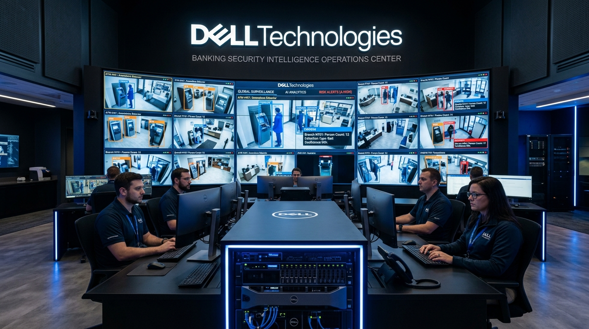
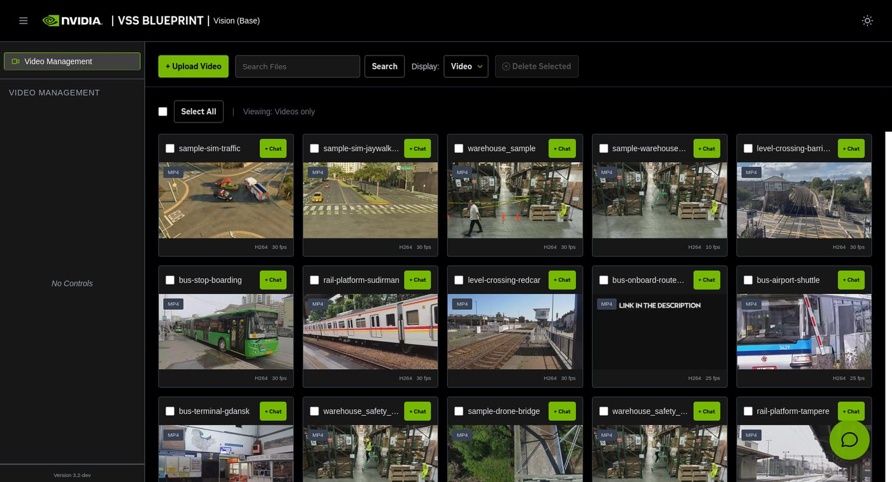

Ask a question of the footage,
instead of watching it
Every bank branch, ATM vestibule and cash centre records video that nobody watches until an incident or dispute arrives — and then staff scrub through hours of tape. This blueprint makes recorded footage searchable in natural language and summarises what happened without anyone reviewing frame-by-frame.

A customer dispute arrives three days after an event: the customer states an ATM failed to dispense SAR 5,000 cash, even though their account was debited. An operations officer must identify the branch, locate the camera angles, and scrub through hours of footage to determine what physically took place.
Conventional video analytics only triggers on predefined rigid tripwires: motion in a polygon, a virtual line crossed, or face recognition. Any novel or contextual question requires manual human video review.
On-device video ingestion
Recorded RTSP streams or local video files are parsed natively on the GB10 hardware — zero footage is transmitted over the internet.
Continuous vision-language description
Cosmos Reason 8B describes continuous actions and events in natural language sentences, capturing nuances that bounding boxes miss.
Semantic search & summarisation
Ask questions in conversational English or Arabic and instantly receive keyframe timestamps with executive factual summaries of the incident.

Ask a question of branch footage and get key moments returned instantly, each accompanied by the model's synthesized textual description of actions observed in the camera frame.
- ATM & Cash-Centre Disputes: Isolate the exact transaction window and confirm whether cash dispensed in minutes rather than days.
- Branch Security & Investigations: Reconstruct the exact sequence of events during a branch emergency without reviewing hours of redundant video.
- Queue & Service Experience: Measure customer wait times, counter density, and service delays across branch networks without deploying single-purpose IoT sensors.
- Vault & Compliance Audit: Validate dual-control cash handling protocols, safe entry procedures, and unauthorized access.
Answers only what was configured before the fact — motion in a box, line crossed. If a new type of dispute arises, existing footage cannot answer it without human eyes.
Answers unanticipated questions asked in conversational language, against footage that has already been recorded.
How does this differ from facial recognition?
This is not biometric facial identification. There is no gallery of human faces and no attempt to determine individual identity. The model describes actions and physical context — a customer approached an ATM, a drawer opened, an object was left on a counter.
This distinction is critical under Saudi Personal Data Protection Law (PDPL) and global privacy frameworks, allowing institutions to audit security without creating biometric surveillance risks.
This answers questions about security footage an institution already lawfully records. Deploying it requires rigorous governance, retention schedules, and access logs — running on-device ensures the data never leaves bank sovereignty.